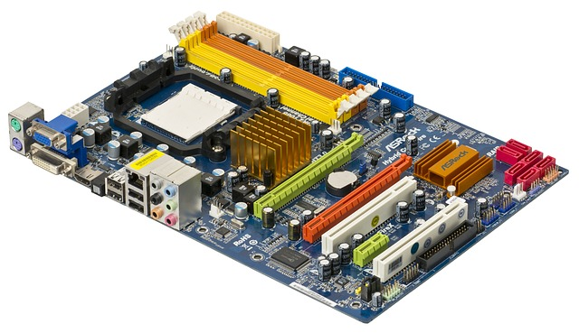
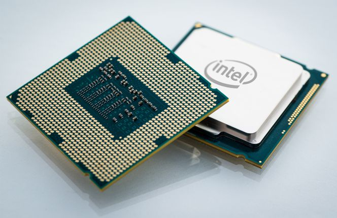
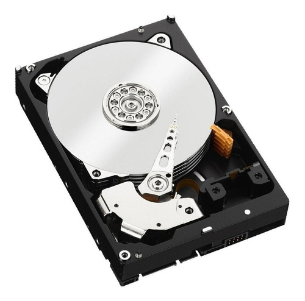
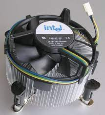
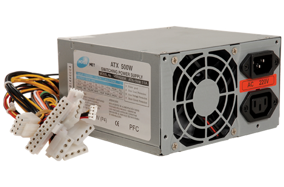
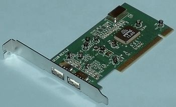
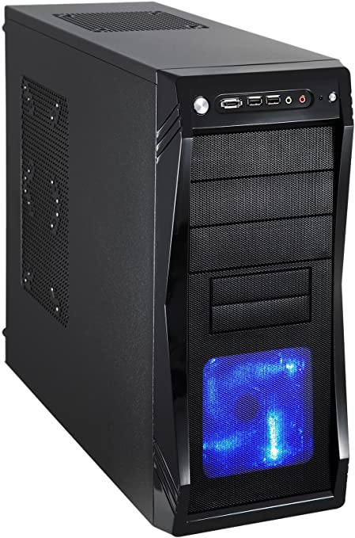
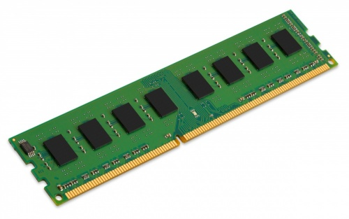

.
TECNOLOGICO NACIONAL DE MEXICO
INSTITUTO TECNOLOGICO DE SALTILLO
ARQUITECTURA DE COMPUTADORAS
PRACTICA 1
NOMBRE PRACTICA
DEREK EMIR GONZALEZ AGUILAR
19051137
|
componente |
Función |
Características |
Foto/imagen |
|
TARJETA MADRE (MOTHER BOARD) |
Es el circuito impreso que conecta todos los componentes de una computadora, tiene un software básico llamado BIOS. |
|
 |
|
PROCESADOR(CPU) |
Capacidad de leer e interpretar las señales que manda el usuario para realizar instrucciones en los componentes del ordenador. |
|
 |
|
DISCO DURO (HARD DISK) |
Almacenar la información del ordenador de forma permanente. |
|
 |
|
DISIPADOR DE CALOR(COOLER) |
Eliminar el exceso de calor de cualquier componente de un ordenador como el CPU o la tarjeta gráfica. |
|
 |
|
FUENTE DE ALIMENTACION (POWER SUPPLY) |
Alimenta de energía a la placa base y a sus componentes |
|
 |
|
TARJETAS DE EXPANSION (VIDEO CARD, NET CARD) |
Incrementar la funcionalidad de un pc, añadiendo características a una placa base |
· Tiene puertos de conexión para dispositivos externos |
 |
|
GABINETE (PC CASE) |
Armazón que contiene los componentes principales del hardware de una computadora. |
· Su estructura ayuda a la ventilación del computador |
 |
|
MEMORIA RAM (RAM) |
Almacenar de forma temporal los datos de los programas que se utilizan |
· Es volátil, desaparece cuando el ordenador de apaga
|
 |
Ver archivo PDF